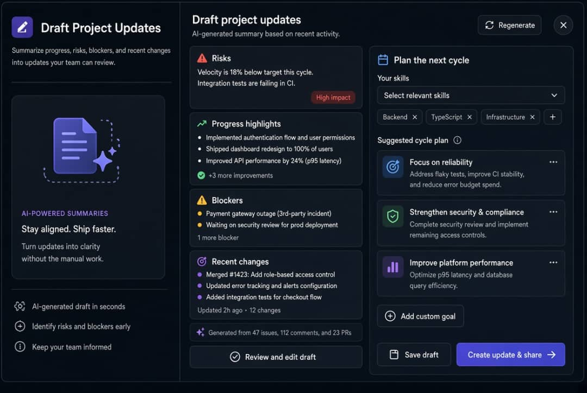
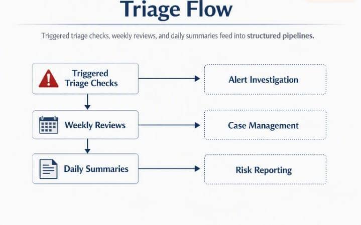
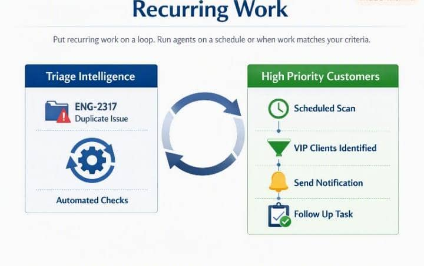
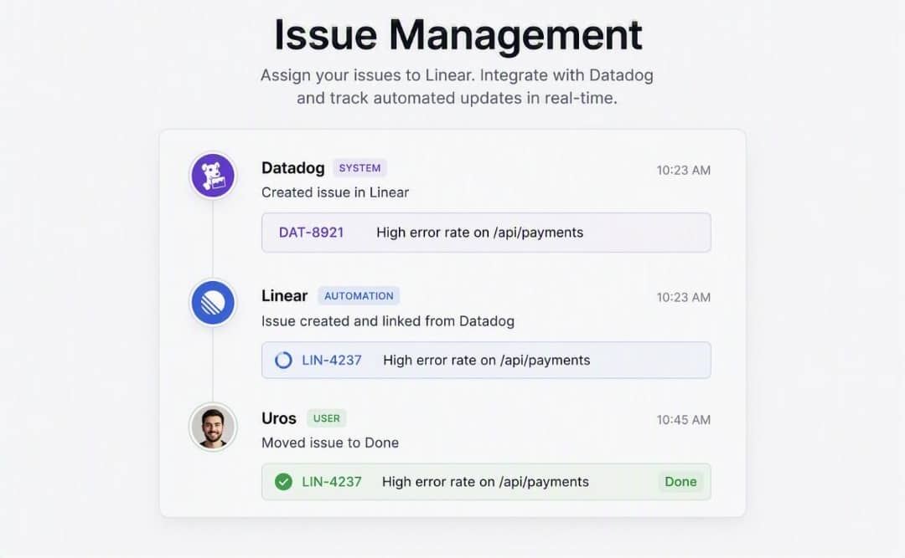
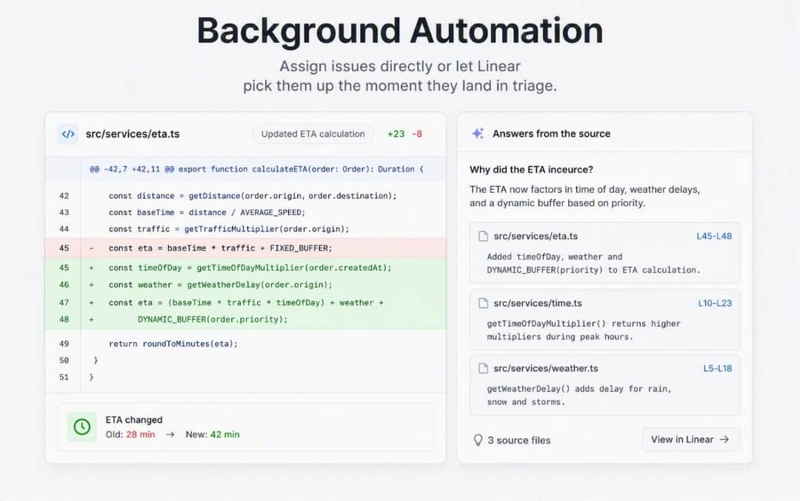
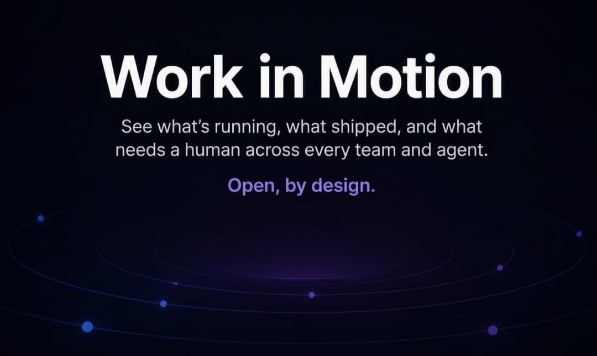

AI and Automations
Artificial colleagues that understand your projects, issues, customer requests, docs, and code.

Linear Agent
Natural collaboration with AI that grounds every decision in full context.

Slack & Teams Integration
Turn conversations into scoped issues with surrounding context.

Draft Project Updates
Summarize progress, risks, blockers, and recent changes into updates your team can review.

Workflow Automation
Check project status, save reusable skills, and let triage run itself with agent workflows.

Triage Flow
Triggered triage checks, weekly reviews, and daily summaries feed into structured pipelines.

Recurring Work
Put recurring work on a loop. Run agents on a schedule or when work matches your criteria.

Automate the Overhead
Triage Intelligence suggests assignees, teams, projects, labels, and related issues automatically.

Code Review Diffs
Stream diffs across the org. Review changes inline and track collaborative development.

Issue Management
Assign issues directly, integrate with Datadog, and track automated updates in real-time.

Background Automation
Assign issues directly or let Linear pick them up the moment they land in triage.

Guided Reviews
Iterate with agents, organize diffs, and see everything your agents are doing.

Task Dashboard
Track tasks across Offline Mode, Core Performance, and UI Refresh categories.

Work in Motion
See what’s running, what shipped, and what needs a human across every team and agent.

Integrations
Bring more context in with tools like Notion, Slack, and PostHog. Take your context anywhere with MCP.

Customer Testimonials


Built for the Future. Available Today.
Linear powers over 40,000 product teams. From ambitious startups to major enterprises.